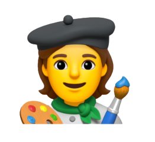

The practice

What do
you see?
Look at the image. Write the first word or phrase that comes to mind.
Your perspective.
Before exploring the archive, tell us what comes to mind.There are no right or wrong answers.
Review mode — your original submission is already counted. You can revisit both questions, but this review will not submit another response.
01
What does an artist do?
Select all that apply.
Thank you for looking closer.
Your answers are saved in this browser. Connect a database to share results across visitors.
The Image of the Artist.
How have artists represented themselves? From paintbrushes and palettes to bodies, gestures, performances, and symbolic objects, artists have used many forms to construct their own images. Explore 25 works organized by visual categories, and discover how these forms appear and change over time.
What did we see?
0 responses collected
These charts update as visitors respond.
Loading responses
The appearance
What makes someone look like an artist?
What do you see now?
You first wrote
If artists can represent themselves through their bodies, tools, objects, actions, and even other people's identities, why has the paintbrush and palette remained such a recognizable image of an artist?